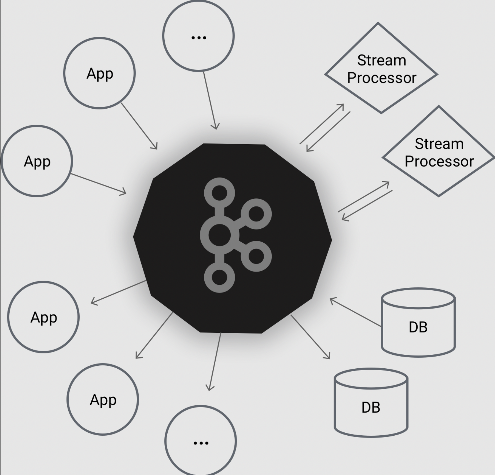
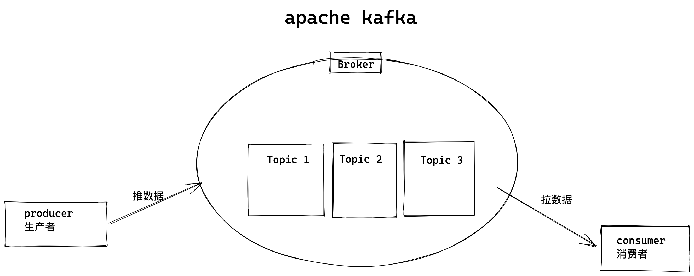
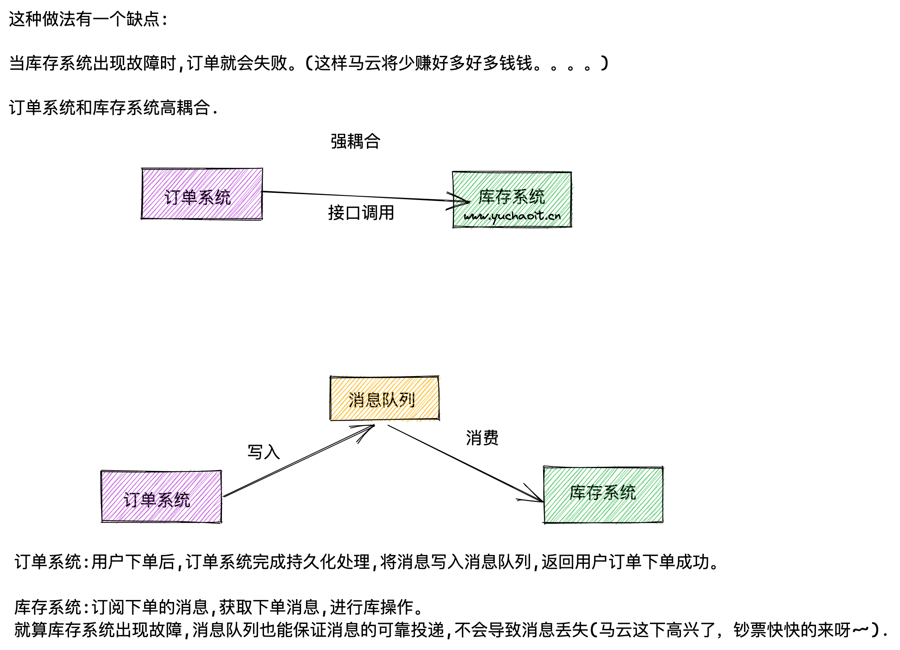
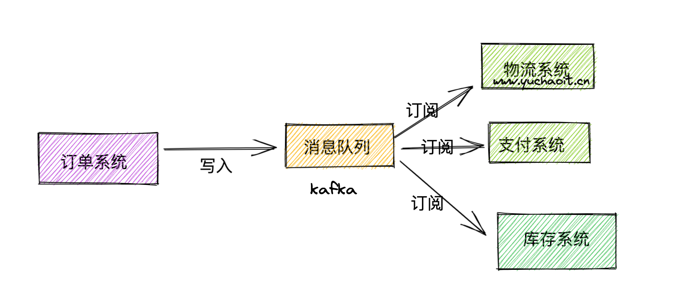
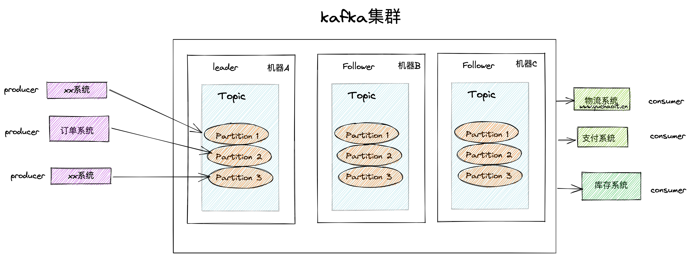
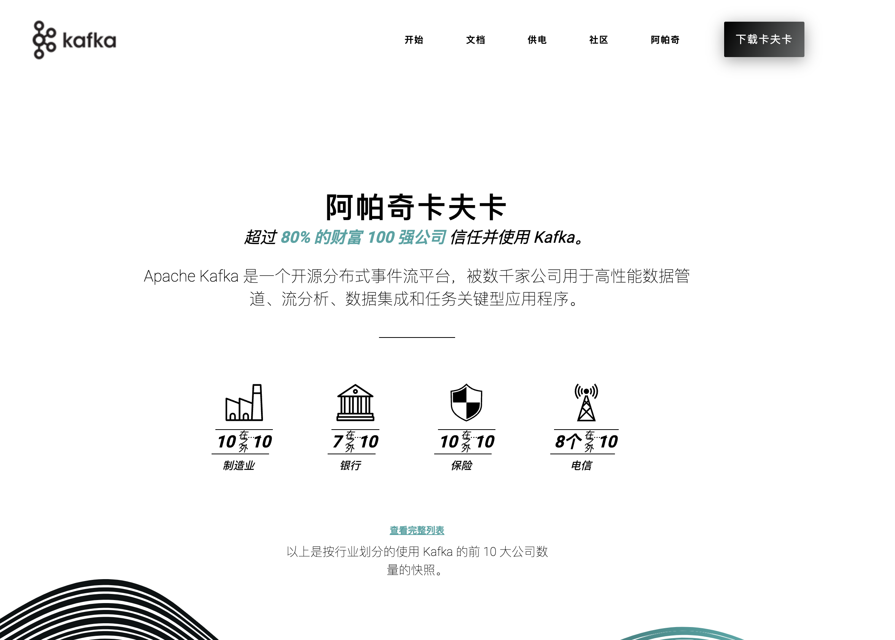
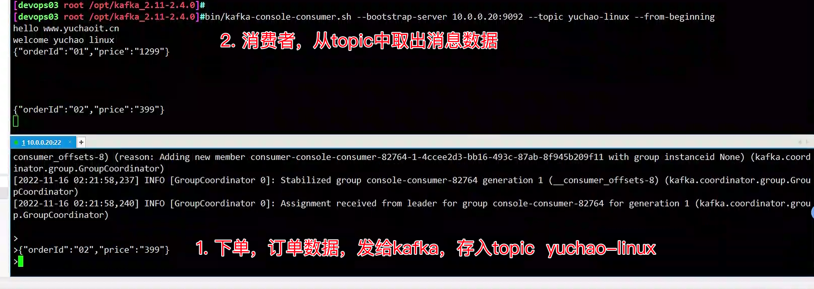
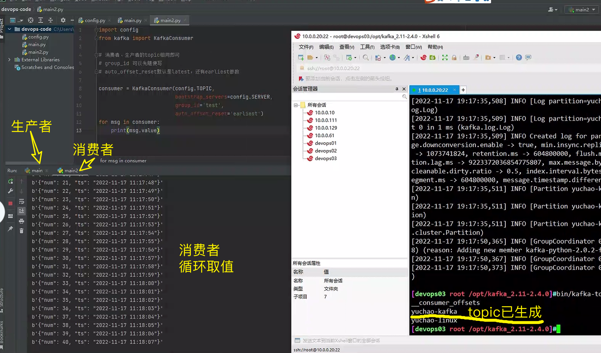
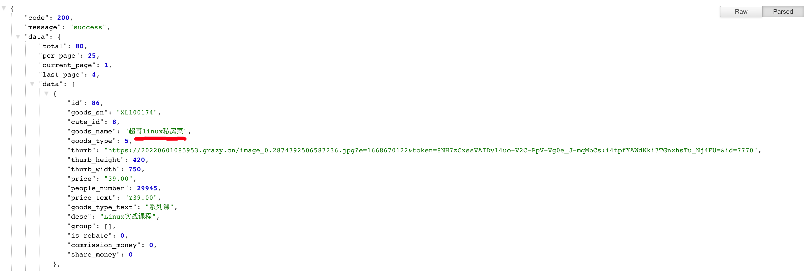

kafka
1. 流处理平台
2. 消息队列
企业要求掌握kafka，工作里使用
1. api原理
2. 项目实战配置
3. kafka面试题
学习目标
1. 从零熟练的掌握kafka
2. 学习核心API以及底层原理
3. 结合微信小程序，微服务完成kafka实战特性
本课适合需要掌握kafka消息传递系统，以及维护大数据架构的专业运维人员，需要了解linux环境配置。
1.kafka是什么

kafka是用于构建实时数据管道和流应用程序。具有横向扩展，容错，wicked fast（变态快）等优点，并已在成千上万家公司运行。
Apache kafka是消息中间件的一种，我发现很多人不知道消息中间件是什么，在开始学习之前，我这边就先简单的解释一下什么是消息中间件，只是粗略的讲解，目前kafka已经可以做更多的事情。
举个例子，生产者消费者，生产者生产鸡蛋，消费者消费鸡蛋，生产者生产一个鸡蛋，消费者就消费一个鸡蛋，假设消费者消费鸡蛋的时候噎住了（系统宕机了），生产者还在生产鸡蛋，那新生产的鸡蛋就丢失了。
再比如生产者很强劲（大交易量的情况），生产者1秒钟生产100个鸡蛋，消费者1秒钟只能吃50个鸡蛋，那要不了一会，消费者就吃不消了（消息堵塞，最终导致系统超时），消费者拒绝再吃了，”鸡蛋“又丢失了，这个时候我们放个篮子在它们中间，生产出来的鸡蛋都放到篮子里，消费者去篮子里拿鸡蛋，这样鸡蛋就不会丢失了，都在篮子里，而这个篮子就是”kafka“。
鸡蛋其实就是“数据流”，系统之间的交互都是通过“数据流”来传输的（就是tcp、https什么的），也称为报文，也叫“消息”。

消息队列满了，其实就是篮子满了，”鸡蛋“ 放不下了，那赶紧多放几个篮子，其实就是kafka的扩容。
各位现在知道kafka是干什么的了吧，它就是那个"篮子"。
kafka名词解释
后面大家会看到一些关于kafka的名词，比如topic、producer、consumer、broker，我这边来简单说明一下。
producer：生产者，就是它来生产“鸡蛋”的。consumer：消费者，生出的“鸡蛋”它来消费。topic：你把它理解为标签，生产者每生产出来一个鸡蛋就放入一个格子（topic），消费者可不是谁生产的“鸡蛋”都吃的，这样不同的生产者生产出来的“鸡蛋”，消费者就可以选择性的挑选"鸡蛋"了。broker：就是篮子了。
大家一定要学会抽象的去思考，上面只是属于业务的角度，如果从技术角度，topic标签实际就是队列，生产者把所有“鸡蛋（消息）”都放到对应的队列里了，消费者到指定的队列里取。
topic就是队列
生产者将数据（消息）写入topic，消费者去指定的topic里取走消息。
什么是消息系统
消息系统负责将数据从一个应用程序传输到另一个应用程序，因此应用程序可以专注于数据，但不担心如何共享它。
分布式消息传递基于可靠消息队列的概念。 消息在客户端应用程序和消息传递系统之间异步排队。
有两种类型的消息模式可用 - 一种是点对点，另一种是发布 - 订阅(pub-sub)消息系统。
在点对点系统中，消息被保留在队列中。
一个或多个消费者可以消耗队列中的消息，但是特定消息只能由最多一个消费者消费。
一旦消费者读取队列中的消息，它就从该队列中消失。
该系统的典型示例是订单处理系统，其中每个订单将由一个订单处理器处理，但多个订单处理器也可以同时工作。
点对点消息系统，图解

发布订阅消息系统
在发布 - 订阅系统中，消息被保留在Topic中。
与点对点系统不同，消费者可以订阅一个或多个Topic并使用该Topic中的所有消息。
在发布 - 订阅系统中，消息生产者称为发布者，消息使用者称为订阅者。
一个现实生活的例子是电视，它发布不同的渠道，如运动，电影，音乐等，任何人都可以订阅自己的频道集，并获得他们订阅的频道时可用。

kafka特点
Apache Kafka是一个分布式发布 - 订阅消息系统和一个强大的队列，可以处理大量的数据，并使您能够将消息从一个端点传递到另一个端点。
Kafka适合离线和在线消息消费。
Kafka消息保留在磁盘上，并在群集内复制以防止数据丢失。
Kafka构建在ZooKeeper同步服务之上。
它与Apache Storm和Spark非常好地集成，用于实时流式数据分析。
优势
以下是Kafka的几个好处 -
- 可靠性 - Kafka是分布式，分区，复制和容错的。
- 可扩展性 - Kafka消息传递系统轻松缩放，无需停机。
- 耐用性 - Kafka使用分布式提交日志，这意味着消息会尽可能快地保留在磁盘上，因此它是持久的。
- 性能 - Kafka对于发布和订阅消息都具有高吞吐量。 即使存储了许多TB的消息，它也保持稳定的性能。
Kafka非常快，并保证零停机和零数据丢失。
工作里用在哪
Kafka可以在许多用例中使用。 其中一些列出如下
指标 - Kafka通常用于操作监控数据。 这涉及聚合来自分布式应用程序的统计信息，以产生操作数据的集中馈送。
日志聚合解决方案 - Kafka可用于跨组织从多个服务收集日志，并使它们以标准格式提供给多个服务器。
流处理 - 流行的框架(如Storm和Spark Streaming)从主题中读取数据，对其进行处理，并将处理后的数据写入新主题，供用户和应用程序使用。
Kafka的强耐久性在流处理的上下文中也非常有用。
kafka基础知识

1.broker，kafka集群里会有很多台Server、每一个kafka实例就是一个Broker，一个集群有多个broker，一个broker里有多个Topic。
2. Topic主题，消息是写入topic主题的，并且topic有很多分区，数据是写入partiion的
3. 并且每个partition 都有offset，称为偏移量的唯一识别。
4. replicas of partition ，分区的副本，不读写数据，作为数据备份，防止丢失。
5.brokers
已发布的消息保存在一组服务器中，称之为Kafka集群。集群中的每一个服务器都是一个代理（Broker）。 消费者可以订阅一个或多个主题（topic），并从Broker拉数据，从而消费这些已发布的消息。
6.kafka cluster，就是有多台机器，多个kafka实例，多个broker的意思。
7.producer，生产者，写入topic(partition)
8. consumer 消费者从broker里读取数据，消费者订阅一个、或多个topic
9. leader，kafka集群里负责读写的节点
10。 follower，追随leader的节点，用于备用提升为新leader。
2.kafka安装

kafka特点是大数据，高并发，低延迟，大吞吐量
kafka是基于zookeeper的分布式消息系统。
# author www.yuchaoit.cn
1. 环境准备centos7 ，以及jdk环境，kafka，和zookeeper都需要
https://www.oracle.com/java/technologies/downloads/
[devops03 root ~]#java -version
java version "1.8.0_181"
Java(TM) SE Runtime Environment (build 1.8.0_181-b13)
Java HotSpot(TM) 64-Bit Server VM (build 25.181-b13, mixed mode)
[devops03 root ~]#
2.获取kafka软件包，是基于scala语言开发,scala又是基于jdk开发而来
https://archive.apache.org/dist/kafka/2.4.0/kafka_2.11-2.4.0.tgz
kafka_2.11-2.4.0.tgz
2.11 scala版本
2.4.0 kafka版本
3.zk环境
[devops03 root /opt]#ls /opt
apache-zookeeper-3.5.6-bin apache-zookeeper-3.5.6-bin.tar.gz jdk-8u181-linux-x64.rpm kafka_2.11-2.4.0.tgz zookeeper
[devops03 root /opt]#
4.所有环境jdk,kafka,zk
[devops03 root /opt]#tar -xf kafka_2.11-2.4.0.tgz
[devops03 root /opt]#ll
total 243472
drwxr-xr-x 8 root root 160 Nov 7 22:17 apache-zookeeper-3.5.6-bin
-rw-r--r-- 1 root root 9230052 Oct 16 2019 apache-zookeeper-3.5.6-bin.tar.gz
-rw-r--r-- 1 root root 170023183 Nov 7 21:44 jdk-8u181-linux-x64.rpm
drwxr-xr-x 6 root root 89 Dec 10 2019 kafka_2.11-2.4.0
-rw-r--r-- 1 root root 70057083 Jul 6 2020 kafka_2.11-2.4.0.tgz
lrwxrwxrwx 1 root root 32 Nov 7 21:47 zookeeper -> /opt/apache-zookeeper-3.5.6-bin/
[devops03 root /opt]#
5.zk启动
[devops03 root /opt/zookeeper/bin]#./zkServer.sh start
/usr/bin/java
ZooKeeper JMX enabled by default
Using config: /opt/zookeeper/bin/../conf/zoo.cfg
Starting zookeeper ... STARTED
[devops03 root /opt/zookeeper/bin]#./zkServer.sh status
/usr/bin/java
ZooKeeper JMX enabled by default
Using config: /opt/zookeeper/bin/../conf/zoo.cfg
Client port found: 2181. Client address: localhost.
Mode: standalone
[devops03 root /opt/zookeeper/bin]#ls /opt/zk/
zkData
[devops03 root /opt/zookeeper/bin]#ls /opt/zk/zkData/
version-2 zookeeper_server.pid
[devops03 root /opt/zookeeper/bin]#
zk启动日志
[devops03 root /opt/zookeeper]#ls
bin conf docs lib LICENSE.txt logs NOTICE.txt README.md README_packaging.txt zkData
[devops03 root /opt/zookeeper]#
6.安装kafka，必须先启动zk，自行启动，或者kafka也提供了自带的kz运行
修改配置文件
[devops03 root /opt/kafka_2.11-2.4.0/config]#grep '^[a-z]' server.properties
broker.id=0
listeners=PLAINTEXT://10.0.0.20:9092
advertised.listeners=PLAINTEXT://10.0.0.20:9092
num.network.threads=3
num.io.threads=8
socket.send.buffer.bytes=102400
socket.receive.buffer.bytes=102400
socket.request.max.bytes=104857600
log.dirs=/opt/kafka-logs
num.partitions=1
num.recovery.threads.per.data.dir=1
offsets.topic.replication.factor=1
transaction.state.log.replication.factor=1
transaction.state.log.min.isr=1
log.retention.hours=168
log.segment.bytes=1073741824
log.retention.check.interval.ms=300000
zookeeper.connect=localhost:2181
zookeeper.connection.timeout.ms=6000
group.initial.rebalance.delay.ms=0
[devops03 root /opt/kafka_2.11-2.4.0/config]#
7.启停kafka，基本命令
# 启动服务端
bin/kafka-server-start.sh config/server.properties &
# 停止
bin/kafka-server-stop.sh
# 创建Topic
bin/kafka-topics.sh --create --zookeeper localhost:2181 --replication-factor 1 --partitions 1 --topic yuchao-linux
# 查看toppic
bin/kafka-topics.sh --list --zookeeper localhost:2181
# 发送消息，生产者
bin/kafka-console-producer.sh --broker-list localhost:9092 --topic yuchao-linux
# 接收消息，旧版本命令
bin/kafka-console-consumer.sh --zookerper localhost:2181 --topic yuchao-linux --from-beginning
# 3.x 新版本的命令
bin/kafka-console-consumer.sh --bootstrap-server 10.0.0.20:9092 --topic replica-yu1 --from-beginning
8.查看kafka运行
# zk端口2181
# kafka端口 9092
[devops03 root /opt/kafka_2.11-2.4.0]#netstat -tunlp
Active Internet connections (only servers)
Proto Recv-Q Send-Q Local Address Foreign Address State PID/Program name
tcp 0 0 0.0.0.0:22 0.0.0.0:* LISTEN 1015/sshd
tcp 0 0 127.0.0.1:25 0.0.0.0:* LISTEN 1256/master
tcp6 0 0 :::36960 :::* LISTEN 84659/java
tcp6 0 0 10.0.0.20:9092 :::* LISTEN 84659/java
tcp6 0 0 :::2181 :::* LISTEN 83885/java
tcp6 0 0 :::8080 :::* LISTEN 83885/java
tcp6 0 0 :::39761 :::* LISTEN 83885/java
tcp6 0 0 :::22 :::* LISTEN 1015/sshd
tcp6 0 0 ::1:25 :::* LISTEN 1256/master
[devops03 root /opt/kafka_2.11-2.4.0]#
9.查看zk写入的kafka数据
[zk: localhost:2181(CONNECTED) 1] ls /
[admin, brokers, cluster, config, consumers, controller, controller_epoch, isr_change_notification, latest_producer_id_block, log_dir_event_notification, zookeeper]
[zk: localhost:2181(CONNECTED) 2]
10.查看kafka日志
[devops03 root /opt/kafka-logs]#ls
cleaner-offset-checkpoint log-start-offset-checkpoint meta.properties recovery-point-offset-checkpoint replication-offset-checkpoint
[devops03 root /opt/kafka-logs]#
初始kafka
1. topic 虚拟概念，由1个、多个partitions组成
2. partition，实际消息存储的单位
3. producer 消息生产者
4. consumer，消息消费者
创建topic
[devops03 root /opt/kafka_2.11-2.4.0]#
[devops03 root /opt/kafka_2.11-2.4.0]#bin/kafka-topics.sh --create --zookeeper localhost:2181 --replication-factor 1 --partitions 1 --topic yuchao-linux
Created topic yuchao-linux.
[devops03 root /opt/kafka_2.11-2.4.0]#bin/kafka-topics.sh --list --zookeeper localhost:2181
yuchao-linux
# 数据也写入了zk
# kafka需要去zk里查数据，然后展示
[devops03 root /opt/kafka_2.11-2.4.0]#/opt/zookeeper/bin/zkCli.sh
[zk: localhost:2181(CONNECTED) 7] ls /brokers/topics/yuchao-linux/partitions/0/state
[]
生产、消费
# 发送消息，生产者
# 注意连接kafka的ip地址，要和config里的一致
[devops03 root /opt/kafka_2.11-2.4.0]#bin/kafka-console-producer.sh --broker-list 10.0.0.20:9092 --topic yuchao-linux
>hello www.yuchaoit.cn
>welcome yuchao linux
>{"orderId":"01","price":"1299"}
>{"orderId":"02","price":"399"}
# 接收消息，2.x版本命令
# 链接kafka服务器
# 链接之后，自动消费提取出数据
[devops03 root /opt/kafka_2.11-2.4.0]#bin/kafka-console-consumer.sh --bootstrap-server 10.0.0.20:9092 --topic yuchao-linux --from-beginning
hello www.yuchaoit.cn
welcome yuchao linux
{"orderId":"01","price":"1299"}

3.客户端操作
1. 安装三方库
PS C:\Users\Sylar\Desktop\devops-code> python -m pip install kafka-python
Collecting kafka-python
Downloading kafka_python-2.0.2-py2.py3-none-any.whl (246 kB)
━━━━━━━━━━━━━━━━━━━━━━━━━━━━━━━━━━━━━━━━ 246.5/246.5 kB 285.3 kB/s eta 0:00:00
Installing collected packages: kafka-python
Successfully installed kafka-python-2.0.2
2. 生产消费者都需要 kafka的链接信息，写为配置文件config.py
SERVER='10.0.0.20'
TOPIC='yuchao-kafka'
3.生产者
import json
import time
import datetime
import config
from kafka import KafkaProducer
'''
参数bootstrap_servers用于指定 Kafka 的服务器连接地址。
参数value_serializer用来指定序列化的方式。
这里我使用 json 来序列化数据，从而实现我向 Kafka 传入一个字典，Kafka 自动把它转成 JSON 字符串的效果。
'''
producer = KafkaProducer(bootstrap_servers=config.SERVER,
value_serializer=lambda m: json.dumps(m).encode())
for i in range(100):
data = {'num': i, 'ts': datetime.datetime.now().strftime('%Y-%m-%d %H:%M:%S')}
producer.send(config.TOPIC, data)
time.sleep(1)
4.消费者
import config
from kafka import KafkaConsumer
# 消费者、生产者的topic相同即可
# group_id 可以先随便写
# auto_offset_reset默认是latest，还有earliest参数
consumer = KafkaConsumer(config.TOPIC,
bootstrap_servers=config.SERVER,
group_id='test',
auto_offset_reset='earliest')
for msg in consumer:
print(msg.value)
测试生产、消费

kafka的生产消费者
当有多个消费者时，也能确保数据不重复消费，不遗漏。
当所有数据都消费完成后，你再重启消费者，也不会再取数据了。
如果此时修改了group_id 程序会重新消费。
只有在很少极端的情况下，kafka才会重复，丢失消息。
订阅多个topic
1.生产者会有多个系统，以topic区别开即可，yu1 yu2
import json
import time
import datetime
import config
from kafka import KafkaProducer
'''
参数bootstrap_servers用于指定 Kafka 的服务器连接地址。
参数value_serializer用来指定序列化的方式。
这里我使用 json 来序列化数据，从而实现我向 Kafka 传入一个字典，Kafka 自动把它转成 JSON 字符串的效果。
'''
#
producer = KafkaProducer(bootstrap_servers=['10.0.0.20:9092'])
for i in range(100):
data = {'orderId': i, 'orderIime': datetime.datetime.now().strftime('%Y-%m-%d %H:%M:%S')}
res1=producer.send('yu1', json.dumps(data).encode())
res2=res1.get(timeout=10)
print(res2)
time.sleep(1)
2.消费者可以订阅多个topic
from kafka import KafkaConsumer
consumer = KafkaConsumer(group_id= 'group2', bootstrap_servers= ['10.0.0.20:9092'])
consumer.subscribe(topics= ['yu1', 'yu2'])
for msg in consumer:
print('*'*50)
print(msg.topic,msg.value)
生产下的json消息处理
生产下的前后端的数据，以json数据为消息传递，记录了订单的信息。
因此如何在kafka里生产，提取json很重要了

生产者
from kafka import KafkaProducer
import json
producer = KafkaProducer(bootstrap_servers=['10.0.0.20:9092'], value_serializer=lambda m: json.dumps(m).encode())
data={"code":200,"message":"success","data":{"total":80,"per_page":25,"current_page":1,"last_page":4,"data":[{"id":86,"goods_sn":"XL100174","cate_id":8,"goods_name":"超哥linux私房菜","goods_type":5,"thumb":"https://20220601085953.grazy.cn/image_0.2874792506587236.jpg?e=1668670122&token=8NH7zCxssVAIDv14uo-V2C-PpV-Vg0e_J-mqMbCs:i4tpfYAWdNki7TGnxhsTu_Nj4FU=&id=7770","thumb_height":420,"thumb_width":750,"price":"39.00","people_number":29945,"price_text":"¥39.00","goods_type_text":"系列课","desc":"Linux实战课程","group":[],"is_rebate":0,"commission_money":0,"share_money":0}]}}
# 写入topic，json数据，写入的是bytes，指定分区号
future = producer.send('linux-yu1' , value= data , partition=0)
print(future.get(timeout= 10))
消费者
自动解码docode()
from kafka import KafkaConsumer
import json
consumer = KafkaConsumer(group_id= 'group2', bootstrap_servers= ['10.0.0.20:9092'], value_deserializer=lambda m: json.loads(m.decode()))
consumer.subscribe(topics= ['linux-yu1'])
for msg in consumer:
print(msg)
还有更多如，消息压缩，发送msgpack消息类型等高级玩法。
https://kafka-python.readthedocs.io/en/master/index.html
python客户端的学习，是站在开发角度去理解如何对接kafka操作，更多原生API功能还是要结合java学习。